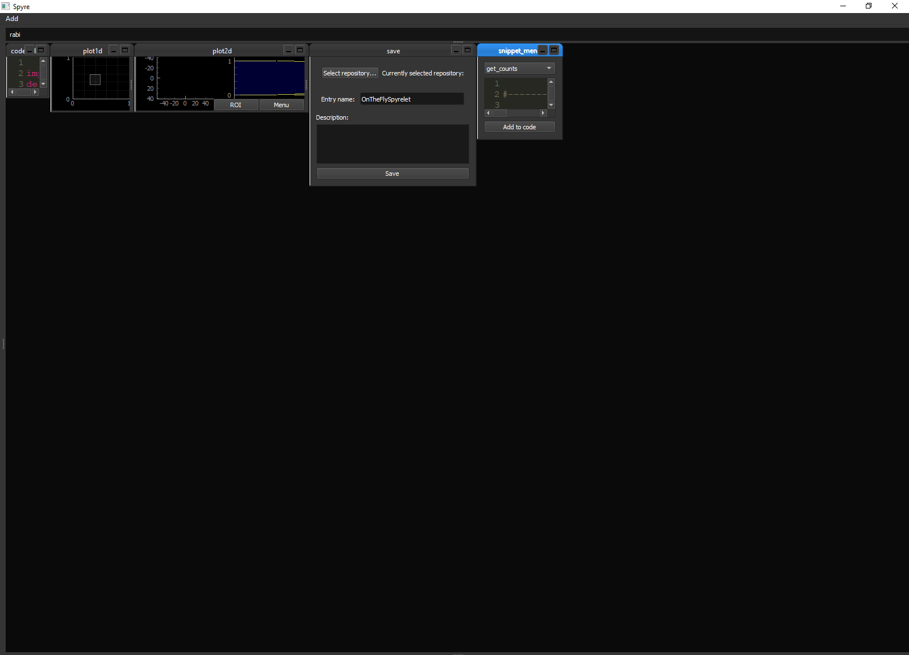

Installation¶
This page will go through installing the code in a new pc. Currently, code only works on a Windows PC. Before starting, check the following: 1. Check if you have conda installed by opening command line (cmd) and typing:
conda --v
If conda can’t be found, then install from <https://conda.io/miniconda.html> and run the .exe, and follow the instructions.
Note
Add miniconda to PATH during the installation (Should be a check box). If you don’t, you may have to add conda to your PATH later.
Check if you have pip installed by opening command line (cmd) and typing:
pip --version
If pip can’t be found, make sure any verison of python is installed. Then go to <https://pip.pypa.io/en/stable/installing/> and follow “install with get-pip.py”.
Check if you have git installed by opening command line (cmd) and typing:
git --version
If git can’t be found, download it from : <https://git-scm.com/download/win>. Make sure to add git to path during installation.
Get familiar with command line. For the installation, you need:
cd dir (ls for unix systems)
cd will change your current working directory to the specified directory, and cd .. will move you one directory back. dir will show you all directories and files in your current directory.
Setting up conda environment¶
We now want to create a conda environment to setup correct versions of python and install packages. Open cmd and run:
conda create -n spyre python=3.5
This will create an empty Python 3.5 installation in a conda environment called “spyre”. Next, activate spyre:
activate spyre
Note
Sometimes, your path will not be set to envs and the above command will not work. In this case, look for the environment:
conda list envs
After finding the path the newly created spyre environment, activate it with “activate” followed by the full path to the spyre env.
Now, your cmd should have this:
(spyre)
Cloning the code¶
Copy the code by first going to your preferred directory in cmd. Then, clone the code by typing:
git clone https://github.com/zhong-lab/code
Now you should have a directory called “code”. Go into that directory:
cd code
Installing packages¶
To install the required packages, we go through each main folder and use setup.py in the following way:
cd lantz
pip install -e .
cd ..
cd spyre
pip install -e .
cd ..
cd pyqtgraph
pip install -e .
Run each command in order. Now, most of the required packages will be installed. Next, install some extra useful packages:
pip install matplotlib
pip install PyQt5
pip install qscintilla
In the future, some spyrelets or lantz drivers may require additional packages. Pip install them as needed.
Testing spyre¶
There is a test spyre called onthefly. It doesn’t require connections to any instruments. Run the spyrelet by first navigating to the “testing” in code/spyre/testing. Then enter:
python main.py onthefly
At this point, the following screen should show up:
If you get an error in cmd, most likely you have to pip install some additional packages. At this point, spyre is fully installed. To keep the code updated, make sure to frequently commit and push to the github repository.